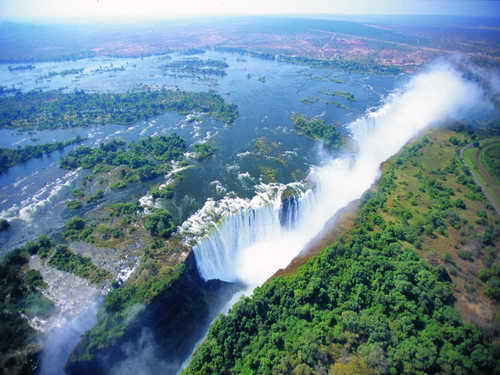
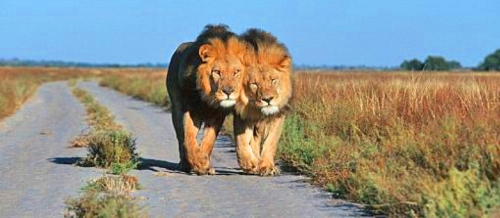

Народности
Население страны составляет около 2 миллионов человек. Основными народностями являются тсвана (66,8%) и каланга (14,8%). В ней проживвают также ндебеле, гереро, сан (бушмены) и другие народности. Среди белого населения преобладают африканеры, которые составляют чуть более одного процента населения страны.

Факты
Ботсвана — затерянное на просторах африканского континента государство, не такое уж, впрочем, и маленькое. Но низкий общий уровень развития вкупе с географической изолированностью делают Ботсвану одной из самых малоизученных стран региона. Да и туристы сюда ездят очень редко — в основном лишь те, кто уже пресытился популярными курортами и возжелал настоящей экзотики.
Климат
На севере преобладает тропический климат со средней температурой июля +16 °C, января +25 °C. Южные области лежат в субтропическом климатическом поясе, здесь в июне – июле днем около +30 °C, ночью температура опускается до нуля. В декабре – феврале температуры днем достигают +46 °С, ночью +25-35 °С.